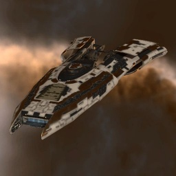

Arbitrator

Тип корабля: Крейсер
Государство/Организация: Amarr
Примерная стоимость: 9.440.000 ISK
Описание
Концепт «Арбитратора» не вполне типичен для кораблестроительной доктрины амаррцев: это корабль-носитель дронов. Вероятно, не самый мощный в своём роде — но прочная броня ставит его на одно из первых мест по живучести среди носителей дронов.
Характеристики
Корпус
Запас прочности корпуса: 1.600 ед.
Вместимость грузового отсека: 345 м^3
Объем отсека для дронов: 150 м^3
Пропускная способность канала телеуправления: 50 Мбит/с
Масса: 11.200.000 кг
Занимает объем: 120.000,0 м^3 (10.000,0 м^3 в разобранном виде)
Влияние инертности конструкции: 0,56x
Сопротивление корпуса ЭМ-урону: 33 %
Сопротивление корпуса термальному урону: 33 %
Сопротивление корпуса кинетическому урону: 33 %
Сопротивление корпуса фугасному урону: 33 %
Броня
Запас прочности брони: 1.500 ед.
Сопротивление брони ЭМ-урону: 50 %
Сопротивление брони термальному урону: 35 %
Сопротивление брони кинетическому урону: 25 %
Сопротивление брони фугасному урону: 20 %
Щит
Запас прочности щита: 1.100 ед.
Влияние на время регенерации щитов: 20 минут и 50 секунд
Сопротивление щита ЭМ-урону: 0 %
Сопротивление щита термальному урону: 20 %
Сопротивление щита кинетическому урону: 40 %
Сопротивление щита фугасному урону: 50 %
Сопротивление средствам РЭП
Сопротивление накопителя нейтрализирующему воздействию: 0 %
Сопротивление воздействию генератору стазис-поля: 0 %
Сопротивление воздействию помех на наводку вооружения: 0 %
Накопитель энергии
Емкость накопителя: 1.375,0 ГДж
Время востановления заряда: 8 минут и 10 секунд
Целеуказания
Максимальная дальность захвата цели: 70 км
Максимальное количество захваченных целей: 7
Радиус сигнатуры: 130 м
Разрешающая способность систем захвата цели: 285 мм
Эффективность радарной системы: 15 ед.
Эффективность магнитнометрической системы: -
Эффективность гравиметрической системы: -
Эффективность ладарной системы: -
Двигательная установка
Максимальная скорость: 200 м/с
Скорость в варп-режиме: 4,0 а.е./с.
Служба оснащения
Мощность ЦПУ: 370,0 Тф
Мощность реактора: 695 МВт
Калибровка: 400 ед.
Точки монтажа орудийных установок: 2
Точки монтажа пусковых установок: 3
Разъемы большой мощности: 4
Разъемы средней мощности: 4
Разъемы малой мощности: 5
Разъемы под установку тюнинг-модулей: 3